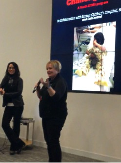

Inside the Mind of an Investor Intensive
A 2-Saturday virtual intensive exploring how real early-stage investment decisions are made through judgment under uncertainty.
Learn MoreFor nearly two decades, we've been at the forefront of youth entrepreneurship, long before introductory programs were widely available. As the field expanded, our perspective deepened.
Working with first-time founders as young as middle schoolers — and drawing on direct experience in early-stage investing — we identified a persistent gap: the shared understanding of risk that connects founders and funders. Progress depends not only on better-prepared founders, but on funders equipped to evaluate those problems with nuance.
That intersection — educator, ecosystem builder, active investor — defines our work today.
Our Mission & Story
Tiered programs for every stage of the entrepreneurial journey — from middle school to seasoned professionals.
A 2-Saturday virtual intensive exploring how real early-stage investment decisions are made through judgment under uncertainty.
Learn MoreApply investor judgment without deploying capital — generating structured, high-signal analysis for time-constrained angel investors.
Learn MoreA 3-week virtual intensive inviting motivated students to explore entrepreneurship from the investor's lens.
Learn MoreStructured virtual mentoring for young innovators to validate ideas, reduce risk, and gain traction with near-peer coaching.
Learn MoreThe Pre-Diligence Lab produces structured Assumption & Evidence Briefs — helping time-constrained angels orient faster, without replacing their judgment.
Pre-Diligence MemosSubmit your pitch deck for structured analysis by trained analysts. Get early, constructive feedback and reach a curated investor audience — free to apply.
Submit Your DeckSupport youth programs, learner stipends, and the digital infrastructure behind our educational experiences.
Annual contribution: $100